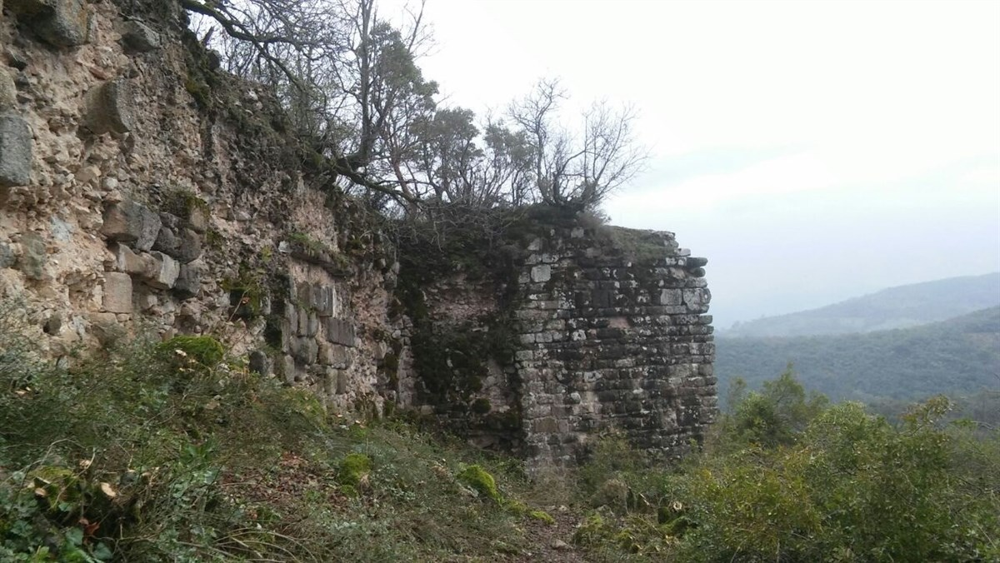
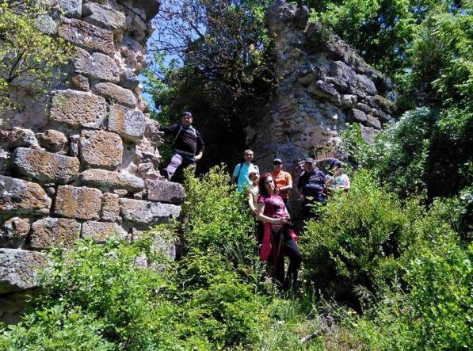
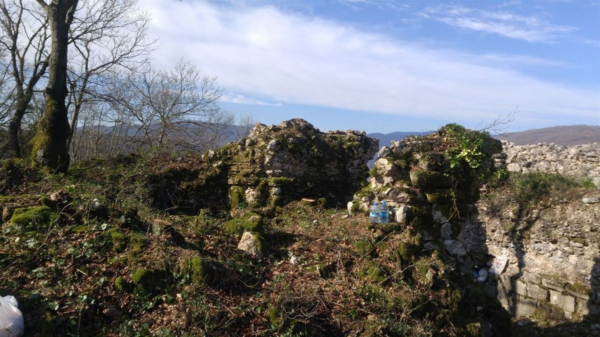
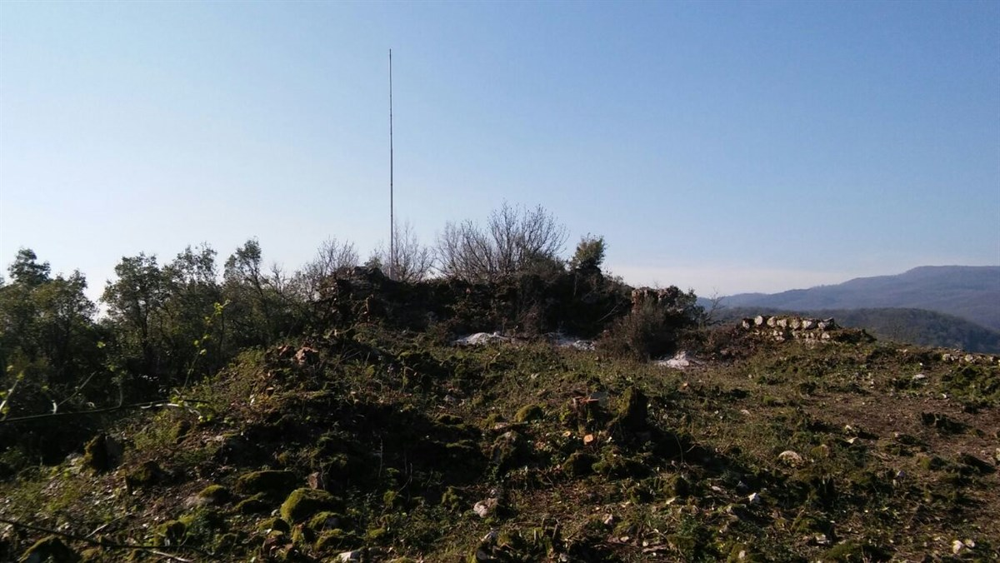

ALACOLUK KALESİ




Gönen İlçesi sınırları içinde yer alan 11 kuleli kale Geç Roma Dönemi'ne ait olduğu kayıtlara geçerken
olasılıkla II. Theodosius (A.D.401-450) veya I. Anastasıus (A.D. 491-518) döneminde Aesepus (Gönen)
Nehri vadisini koruma amaçlı yapılan antik Alacaoluk Kalesi Gönen İlçe Kaymakamlığı girişimi ile Bursa
Kültür Varlıkları Koruma Bölge Kurulu Kararı ve Gönen Belediye Başkanlığı, Bandırma Müze Müdürlüğü ve
Aladağ Orman İşletme Şefliğinin katkılarıyla bitki örtüsünün temizlenerek görünürlük kazandırıldı ve
ziyaretçilere açık hale getirildi